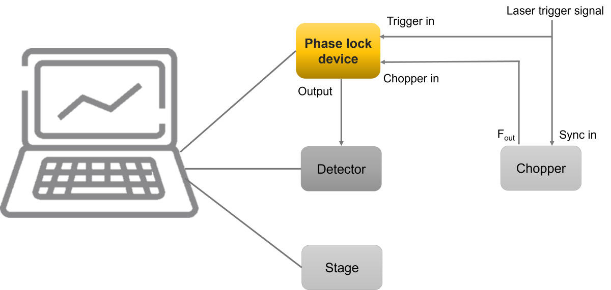

PulsearSpec
menu


Designed for pump-probe experiments, the easiest way to determine the pump on and pump off pulse
Contact us to get a quote
The Phase Lock Device is a setup engineered to deliver precise output based on the status of the input trigger signal and the chopper input signal. This device features a Type-C port, used for power supply and connecting to a PC, enabling control through the LabVIEW software via this connection. The specially designed circuit board is optimized for high-speed processing. This allows for real-time signal processing with an impressively low delay of less than 20 ns between the input and output triggers. Furthermore, the device's efficient low-power consumption design not only minimizes energy usage but also significantly enhances its longevity and reliability.
The Phase Lock Device is superbly suited for transient absorption spectroscopy and experiments employing pump-probe techniques, including 2D Electronic Spectroscopy (2D ES), Transient Absorption Imaging (TAM). It proficiently differentiates between probe spectra in the presence or absence of pump pulses. Additionally, we offer a LabVIEW subVI for straightforward integration with your existing LabVIEW control software, enhancing its ease of use in various experimental setups.

Application idea for transient absorption experiments
| Name | Description |
|---|---|
| Communication Port | Type-C Port for Power and Control |
| Trigger Signal Delay | ≤ 20 ns |
| Laser Pulse Frequency | ≤ 200 kHz |
| PC Response Time | ~ 3 ms |
| BNC Input Voltage Range | 2 ~ 5 V |
| BNC Output Voltage | 5 V |